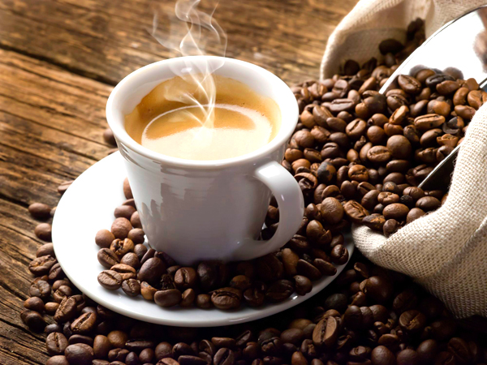
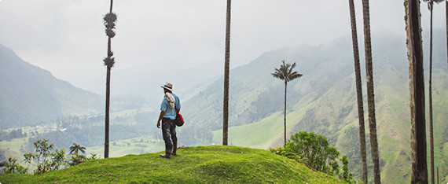
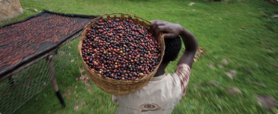
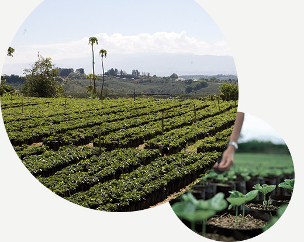
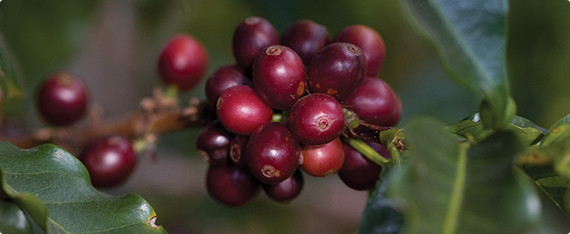
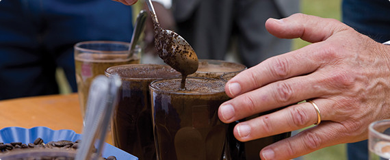

|  | 최상의 커피는 최상의 원두로부터 만들어집니다. 옥탑방의 아라비카 원두는 일반 아라비카 원두와는 다릅니다. 옥탑방은 당사의 원두가 최상의 품질을 갖추도록 모든 단계에서 최선의 노력을 기울입니다. 과연 옥탑방은 어떤 과정을 거칠까요? 바로 이렇습니다. |
|  | “최상의 원두를 찾아 떠납니다. 더 높은 곳을 향해.” 최상의 원두는 고도가 높은 곳에서 자랍니다. 추운 기후와 따듯한 기후를 거치며 농도가 짙어지고, 이렇게 단단해진 원두는 더 깊고 복합적인 맛을 냅니다. 옥탑방에서는 바로 이런 원두의 맛을 느껴보실 수 있습니다. |
| “커피와 관련된 모든 것,그 이상을 위해 노력합니다.” 커피농가들이 보다 훌륭한 원두를 재배할 수 있도록 옥탑방이 그들을 돕습니다. 어느 곳에 있는 어떤 농가이든 모두 해당됩니다. 이를 위해 옥탑방은 4개의 대륙에서 농가지원센터를 운영하고 있습니다. 이 곳에서는 전문가들이 토양에 대해 연구하고 샘플을 검사하며 도움을 원하는 모든 농가에 무료 자문을 제공합니다. |  |
|  | “커피 농가와의 진실되고 지속적인 관계” 커피의 미래는 커피농가들의 미래와 직결되어 있습니다. 따라서 농가들이 원두를 가꾸듯 옥탑방 또한 농가들과의 관계를 가꾸어 나갑니다. 커피농가들이 그들의 제품에 대한 공정한 가격을 받고 지역사회 모든 사람들이 커피 산업으로부터 이득을 얻을 수 있도록 노력합니다. 이를 통해 농가들의 생활이 나아지고 우리 모두가 더 훌륭한 커피를 즐길 수 있게 됩니다. |
| “까다롭고 엄격하게 수확합니다.” 옥탑방은 커피 열매가 최상의 상태일 때, 즉 붉게 잘 익은 완벽한 상태일 때에만 수확합니다. 그리고 크기와 색깔 및 농도를 기준으로 이들을 다시 엄선해냅니다. 결함은 용납하지 않습니다.이를 두고 사람들은 집착이라고 말하지만 옥탑방은 훌륭한 커피라고 말합니다. |  |
|  | “끝없는 공부, 그리고 연구.” 옥탑방은 모두가(여러분을 포함해서) 기대하는 최상의 맛을 식별해내기 위해 하루에 1000잔이 넘는 커피를 맛봅니다. 한 웅큼의 커피는 최소 3번의 검증을 거쳐 통과됩니다. 따라서 여러분이 들이키는 한 모금의 스타벅스® 커피 모두가 최상의 맛을 선사합니다. |